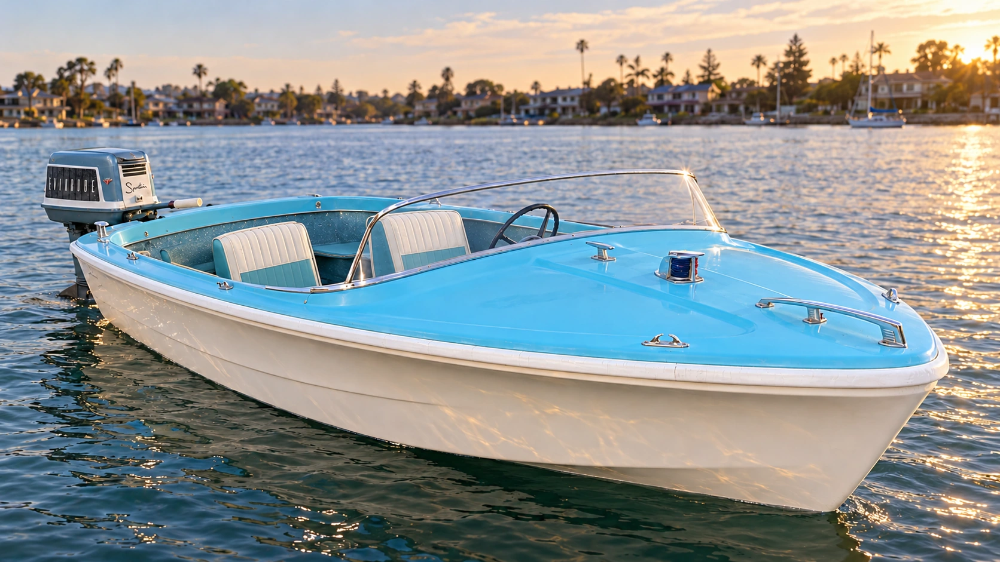

Außenborder.
Von entspannt bis sportlich.
Die Elektrifizierung von Außenbordern eröffnet viele Möglichkeiten: entspannte Ausfahrten auf Seen und Lagunen, auf denen ausschließlich Elektroantriebe erlaubt sind – für private Bootseigner ebenso wie für Mietflotten. Oder sportliche Runabouts auf größeren Seen und Binnenmeeren. Motor, Batterie und Einbau werden auf das Boot und seinen Einsatzzweck abgestimmt.
Unser Performer-Projekt von 1959 ist ein Beispiel dafür. Der historische Evinrude gehört zum Charakter des Bootes. Es gibt verschiedene Möglichkeiten, diesen klassischen Außenborder-Look zu erhalten und dennoch elektrisch zu fahren.
FiberGlassics sind Boote aus glasfaserverstärktem Kunststoff aus den 1950er- bis frühen 1970er-Jahren mit unverwechselbarem zeittypischem Design – etwa markanten Heckflossen und Formen, die auch Autos und andere Produkte dieser Epoche prägten. Ihre Restaurierung und Nutzung halten dieses Design-Erbe auf dem Wasser lebendig.
Über ein FiberGlassic-Projekt sprechen ↗